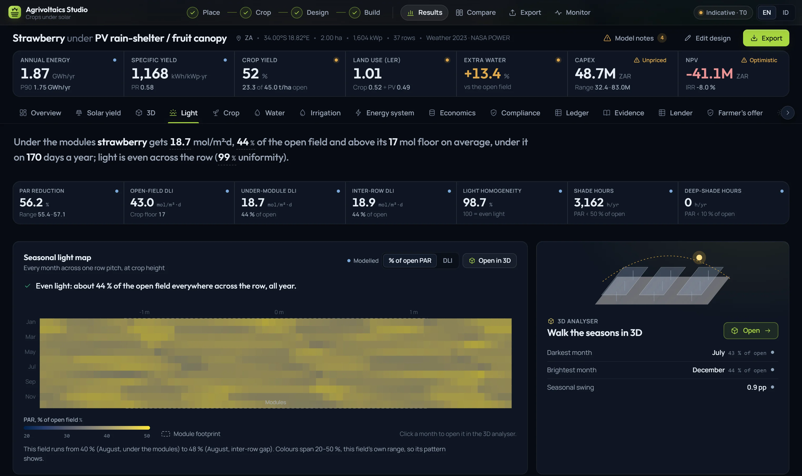
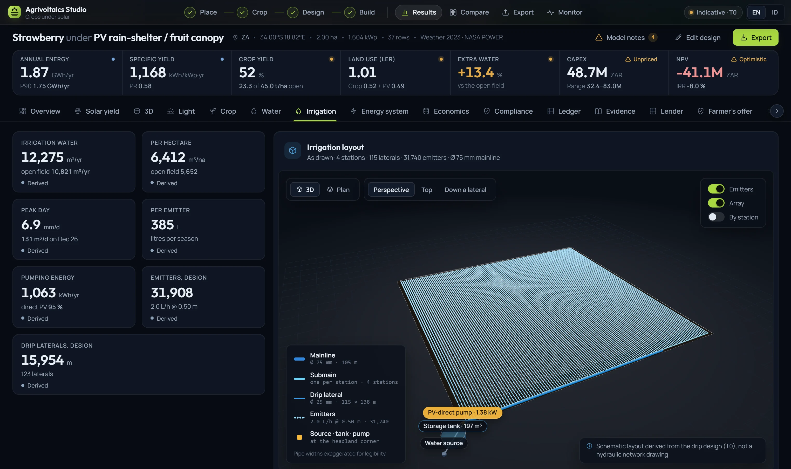
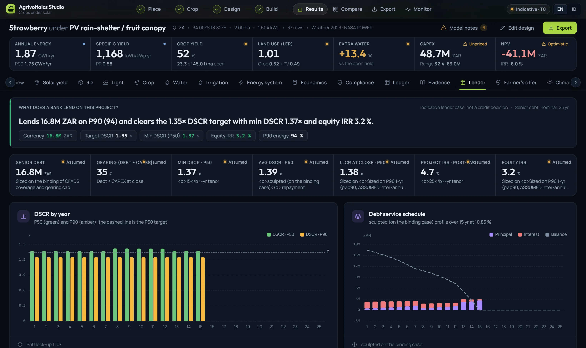
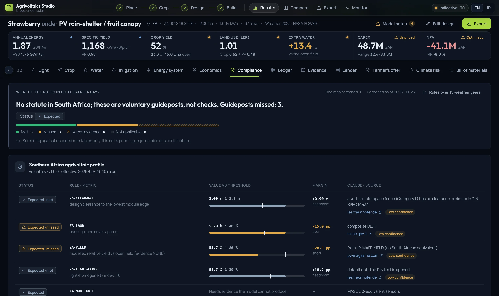
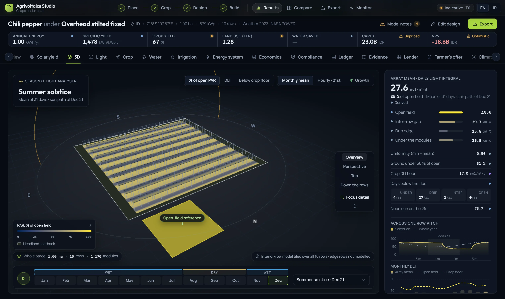

Everything the studio does, with its status
Every row below was checked against the code that ships. Live means a user can reach it and it computes. Anything that is not yet switched on says "in build", in the same place a live feature would.
Site & parcel
Start from the real field, or from a whole district.

Weather
Licensed data, graded before it is used.

Light & energy
What the panels make, and what light is left for the crop.

Crop
Thirty-five crops, each with its evidence.

Water
Demand under the array, and the pipes to meet it.

Money & the deal
Cost, cash, debt, and a deal both sides can sign.

Rules
Twelve regimes, rule by rule, with the clause.

Evidence
Every number with its basis, band and sources.
3D
The whole parcel, every month, every row.

Exports
Twelve formats with the same stamp in every file.

Reports
Project dossierPDF
Compliance screeningPDF
Methods and assumptionsMD
Data
Project workbookXLSX
Monthly ledgerCSV
Cash flowCSV
CAPEX linesCSV
Reproducible runJSON
Maps and GIS
Parcel and rowsGeoJSON
Parcel and rows for Google EarthKML
Engineering
Layout drawingDXF
Solar engine hourly 8760CSV
Monitoring
Measure what was modelled.

Search & workspace
Many designs, not one.
| Item | Count | Detail |
|---|---|---|
| Steps | 8 | Place · Crop · Design · Build · Results · Compare · Export · Monitor |
| Result views | 16 | Overview to bill of materials |
| Engine stages | 13 | Site to ledger |
| Crops | 35 | From strawberry to water spinach |
| Archetypes | 5 | A · C · D · E · F |
| Compliance regimes | 12 | 9 statutory · 1 draft · 2 voluntary |
| Jurisdictions | 20 | Currency and locale table |
| Currencies | 14 | ZAR · IDR · EUR · USD and ten more |
| Cost rate books | 5 | South Africa · Indonesia · Germany · USA · generic |
| Crop price rows | 82 | South Africa · Indonesia · USA · Germany · Italy |
| Weather sources | 3 | NASA POWER · PVGIS SARAH-3 · ERA5 |
| Weather years | 21 | Plus 15-year bands |
| Export formats | 12 | Plus 5 in-tab downloads and one ZIP |
| Logger formats | 8 | Campbell TOA5 to ChirpStack |
| Literature | 296 | Observations from 54 sources |
| Languages | 2 | English · Bahasa Indonesia |
See every row run on your field
Bring a boundary and a crop; we take it from place to dossier in one sitting.